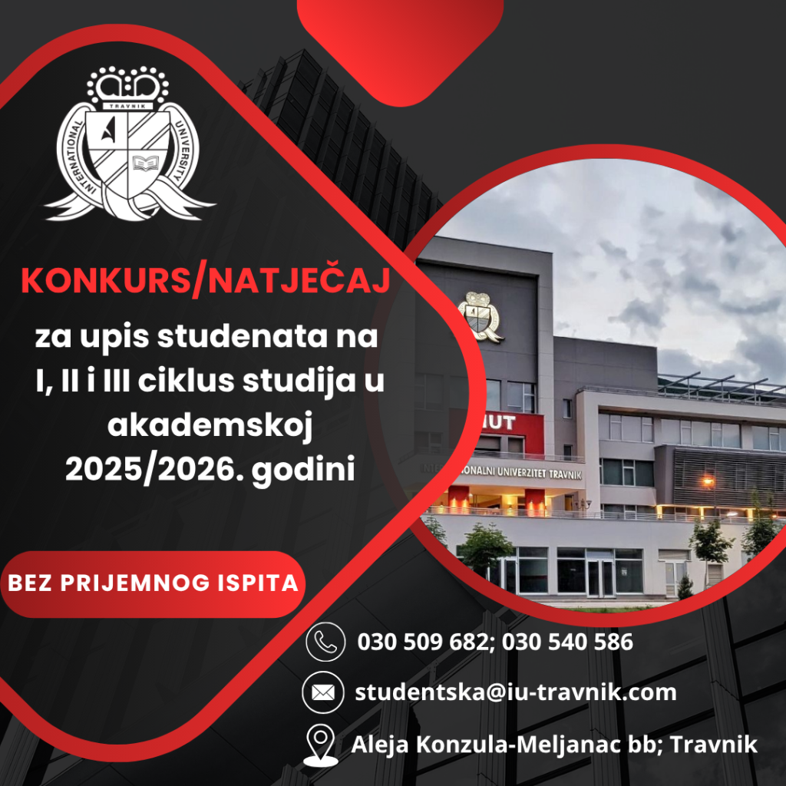

Univerzitet upisuje studente na osnovu Odluke o upisu uz saglasnost nadležnog ministarstva koja sadrži broj redovnih studenata, broj vanrednih studenata, broj stranih državljana i broj studenata za učenje na daljinu ukoliko su traženi zahtjevom i odobreni odlukom.
Pravo na prijavu konkursa za upis u prvu godinu studija imaju kandidati koji imaju završenu srednju četverogodišnju školu.
Pravo na prijavu konkursa za upis na II ciklus studija imaju kandidati koji imaju završen odgovarajući dodiplomski studij sa 180 ili 240 ECTS bodova.
Pravo na prijavu konkursa za upis na III ciklus studija imaju kandidati koji imaju završen magistarski studij sa najmanje 300 ECTS bodova.